Lock
SCR-LOCK-001·002·003·004 · Status view · Apply · Electronic signature · Release · History
Lock status view
- 1.1Screen layout
- 1.2Lock status at a glance
- 1.3Subject list and row actions
1.1Screen layout
Overview
This is the screen where you lock entered data so it cannot change any further, and see at a glance what is locked. Locks can be applied at two levels, per subject and for the whole project. Both applying and releasing a lock require a reason and are confirmed with an electronic signature. The screen runs from top to bottom in this order: Project Lock → summary counts → filters → subject list.
Screen guide
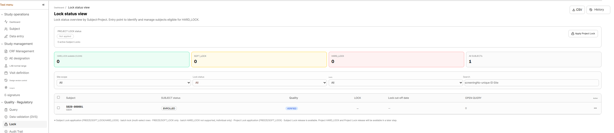
“CSV” — downloads the subject Lock list you are viewing as a file.
“History” — moves to the screen that gathers lock and release records 4.1. This button is the only way to reach that screen.
“Apply Project Lock” — locks the whole project at once 2.4. It is shown only to data managers.
The subtitle of the screen states its role — “Overview of Lock status at subject and Project level. Entry point for identifying and managing subjects eligible for HARD_LOCK.”
Project Lock status — whether the whole project is locked, and the number of active Subject Locks 1.2.
Four summary counts — summarize the lock status in numbers 1.2.
Four filters — Participating site · Lock status · Quality · Search. Search finds subjects by screening number · unique ID · site code.
Subject list — the lock status and actions for each subject 1.3.
Bottom notice — a line that notes the range of functions currently available (see Precautions below).
The “Quality · Regulatory > Lock” item in the left menu is the location of this screen.
Access paths
- • Left menu “Quality · Regulatory > Lock” — appears only after you have entered the project.
- • Project dashboard > “Lock status” widget, “Manage Lock →”
- • Project dashboard > “Data quality” widget, “Subject quality · Lock list” — the route from reviewing quality to locking.
Precautions
Must check Data corruption · Form cannot be completed
- • The last sentence of the bottom notice line does not match the current screen. It says “Project HARD_LOCK and Project Lock release will be provided in the next stage,” but releasing the Project Lock is already available: when the project is locked, a “Release Project Lock” button appears in the same spot. Only the notice text remains as it was before. The part that is correct is that locking the whole project with HARD_LOCK is not yet available.
1.2Lock status at a glance
Overview
Before counting the list one by one, this area shows how far the project is locked right now. The top card is the whole-project lock, and the four boxes below it are subject-level summary counts. The counts are based on all subjects, regardless of filters. Applying a filter does not change these numbers.
Screen guide
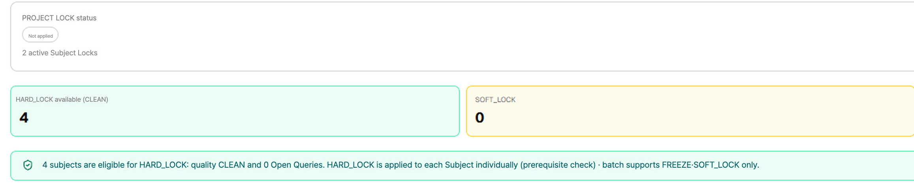

“Apply Project Lock” — locks the whole project 2.4. If the project is already locked, the same spot changes to “Release Project Lock”.
Project lock status — the screenshot shows “Not applied”. When locked, a lock type badge and the applied date appear in that spot.
Active Subject Lock count — the number of subjects currently locked. When the project is locked, “Project Lock in effect — standalone release of Subject Locks blocked” also appears here (see Precautions in 1.3).
HARD_LOCK available (CLEAN) — the number of subjects whose quality is CLEAN and that are not yet locked. VERIFIED is not counted here.
SOFT_LOCK — the number of subjects locked at the data cleaning stage.
Notice banner — “4 subjects eligible for HARD_LOCK — quality CLEAN and 0 Open Queries condition met. HARD_LOCK is applied to each Subject individually (prerequisite check) · batch supports only FREEZE and SOFT_LOCK.” If no subject is eligible, this banner does not appear.
HARD_LOCK — the number of subjects fully locked.
All Subjects — the total number of subjects in the project. It does not equal the sum of the three numbers above, because subjects who are neither locked nor CLEAN are not counted anywhere.
Three lock types
| Lock type | What is blocked | When to use |
|---|---|---|
| FREEZE | Blocks data changes and Query responses. Source data check (SDV) is allowed | Temporarily holding data while it is under review |
| SOFT_LOCK | Only changes made in response to a Query are allowed | Data cleaning stage · just before full lock |
| HARD_LOCK | Full lock. Applied to one subject at a time only, and must pass the prerequisite check | When finalizing the data |
Precautions
Easily misunderstood behavior
- • “HARD_LOCK available” counts only subjects whose quality is CLEAN. Subjects whose quality is VERIFIED are not included in this number, even if the source data check is complete, and the “HARD available” badge does not appear in the Lock column of the list. If the subjects look ready to lock but the number is 0, check the quality column first.
1.3Subject list and row actions
Overview
Each row is one subject. To tell whether a subject can be locked, read the three columns Quality · Lock · Open Query together. A full lock is possible only when the quality is CLEAN and there are no open Queries. Actual operations start from the ⋯ menu at the right end of each row.
Screen guide
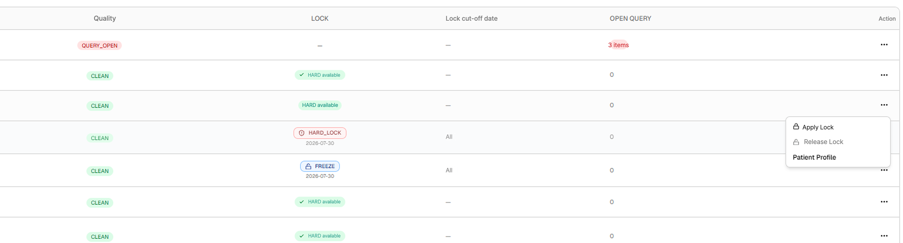
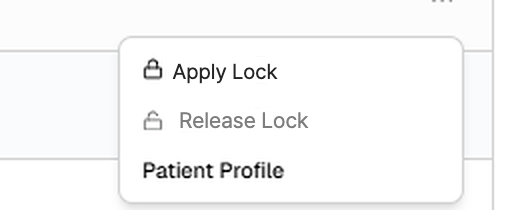
⋯ — opens the action menu for that subject.
“Apply Lock” — opens the lock window 2.2. It is disabled on rows that are already HARD_LOCK, because once fully locked, another lock cannot be placed on top of it.
“Release Lock” — opens the release window 3.1. It is disabled on a row that is not locked, or when the whole project is locked (see Precautions below).
“Patient Profile” — goes to that subject’s integrated screen. Use it to check the content before locking.
The table has 8 columns — Select · Subject · Subject status · Quality · Lock · Lock cut-off date · Open Query · Actions. The Select column at the far left is shown only to data managers 2.1.
Quality — one of CLEAN · VERIFIED · PENDING · QUERY_ANSWERED · QUERY_OPEN. The first row in the screenshot is QUERY_OPEN, so it cannot be locked.
Lock — if locked, the type badge and applied date; if it can be locked, a green “HARD available”; if neither, “—”.
Lock cut-off date — “All” means the whole dataset is locked. If a date and a “Partial” badge appear, only data up to that date is locked 2.2. Rows that are not locked show “—”.
Open Query — the number of open Queries. If it is not 0, a full lock cannot be applied.
Precautions
Must check Data corruption · Form cannot be completed
- • If the whole project is locked, you cannot release one subject on its own. In that case the “Release Lock” item in the row menu is not clickable, and a “Release Project Lock first” notice appears. Even if the release window opens, it is blocked with the message “A higher-level Project Lock is in effect. You must release the Project Lock first before you can release the Subject Lock.” Release the project lock first, then try again.
Apply Lock
- 2.1Select targets
- 2.2Apply Lock window
- 2.3Electronic signature
- 2.4Whole-project lock
2.1Select targets
Overview
This is the flow for locking several subjects at once. Check the square at the left of a row, and a blue band appears above the list, from which you start the batch lock directly. When locking just one subject, do not check the box; use ⋯ > “Apply Lock” on that row 1.3. A full lock (HARD_LOCK) can only be done that way.
Screen guide
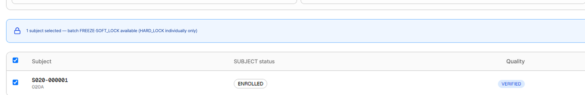

Row selection — check the subjects you want to lock. The number in the band above changes with the number checked.
“Clear selection” — clears all checks.
“Batch lock N selected subjects (FREEZE/SOFT_LOCK)” — opens the lock window 2.2. As the button name shows, only two types can be chosen in a batch.
The wording in the band repeats this limit: “1 subject selected — batch FREEZE·SOFT_LOCK can be applied (HARD_LOCK is one subject at a time only).”
The checkbox in the header checks every row that matches the current filter at once. It is safer to narrow the list with a filter first, then click here.
Precautions
Easily misunderstood behavior
- • The Select column and batch lock are visible only to data managers. The principal investigator’s screen has no check column at all, so this flow cannot be started there. Each subject must be locked one at a time through ⋯ > “Apply Lock”. This is not a fault; it is normal behavior based on permissions. For the same reason, “Apply Project Lock” is also for data managers only.
2.2Apply Lock window
Overview
This window sets which lock, why, and how far it applies. Once you fill in the four items, you move to the electronic signature step, and the lock is confirmed only after you sign 2.3. The subtitle at the top of the window tells you how many items will be locked this time, so check it first so you do not lock the wrong scope.
Screen guide

① Lock type — the screenshot has SOFT_LOCK selected. The selected option is colored. In a batch lock, only FREEZE and SOFT_LOCK appear.
② Reason category — you must choose one. The list changes depending on the Lock type you chose above (see the table below).
Detailed memo — write the background for applying the lock. The label says “Optional”, but you must enter something before you can proceed (see Precautions below).
Lock only data up to a specific cut-off date — if this is not checked, all data is locked.
If you check it, a date field appears. It locks including data created on the cut-off date itself. The on-screen wording “Including that day” means this.
“Proceed to electronic signature” — moves to the signature step 2.3. The lock is not yet applied at this point.
Target — the screenshot shows “Batch: 1 subject selected”, and “Multiple subjects · 1 target” is also shown below the window title.
Electronic signature notice — “After entering the electronic signature password on the next step, the lock is confirmed.”
Reason categories by lock type
| Lock type | Reason categories you can choose |
|---|---|
| FREEZE | Monitoring review · Interim Lock · Regulatory response · Other |
| SOFT_LOCK | Data cleaning stage · Interim Lock · Regulatory response · Other |
| HARD_LOCK | Study closeout · Interim Lock · Regulatory response · Other |
Precautions
Must check Data corruption · Form cannot be completed
- • The label of “Detailed memo” says “Optional”, but you cannot proceed if it is left empty. You must enter at least 3 characters before “Proceed to electronic signature” is enabled. If you have chosen a reason category but the button stays dimmed, check the memo field first. (In the release window, the same field is shown from the start as required, with at least 5 characters; see 3.1.) Also, choosing HARD_LOCK turns off the cut-off date setting, because a full lock is always a whole-dataset lock.
2.3Electronic signature
Overview
This is the final step that confirms the lock. An electronic signature is a legally binding record. It keeps who signed, what they signed, and with what meaning, and once recorded, it cannot be deleted. For that reason, before signing you must check that the signature target is the scope you intended. This window appears in the same way when releasing a lock 3.1.
Screen guide
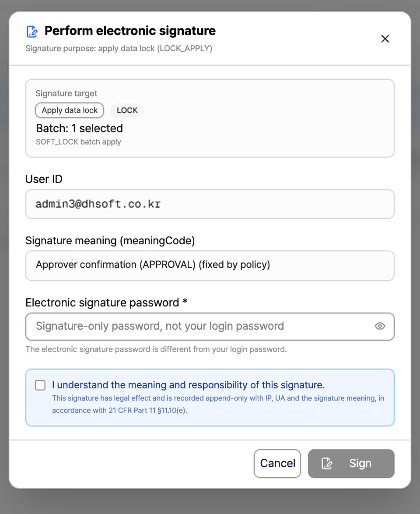
Electronic signature password — a signing-only password that is different from your login password. Press the eye icon on the right to check what you have entered.
“I understand the meaning and responsibility of this signature” — you must check this box before you can sign.
“Sign” — the signature is recorded and the lock is confirmed.
Signature purpose — what you are signing is shown under the title. The screenshot shows Apply data lock.
Signature target — the scope and type are shown again, such as “Batch: 1 subject selected / SOFT_LOCK batch apply”. This is the last checkpoint.
User ID — the account you are currently logged in with. You cannot sign on behalf of someone else.
Signature meaning — fixed to approver confirmation, and users cannot change it.
Notice — “The electronic signature password is different from the login password.”
Precautions
Must check Data corruption · Form cannot be completed
- • A signature cannot be undone, and it leaves a record. The note next to the checkbox states this: “This signature has legal effect, and under 21 CFR Part 11 §11.10(e) it is recorded in append-only form together with IP, UA and the signature meaning.” In short, connection information is kept as well, and that record cannot be deleted or changed. If you locked by mistake, the only way to reverse it is to perform a release with a new signature, and that release is also kept in the history 3.1 · 4.1.
2.4Whole-project lock
Overview
This window locks the whole project at once. The input items are the same as for a subject lock, but the scope of effect is different: all lower-level subjects are locked together, and after that you cannot release just one subject (see Precautions in 1.3). The screenshot shows the first-opened state, where nothing has been selected yet.
Screen guide
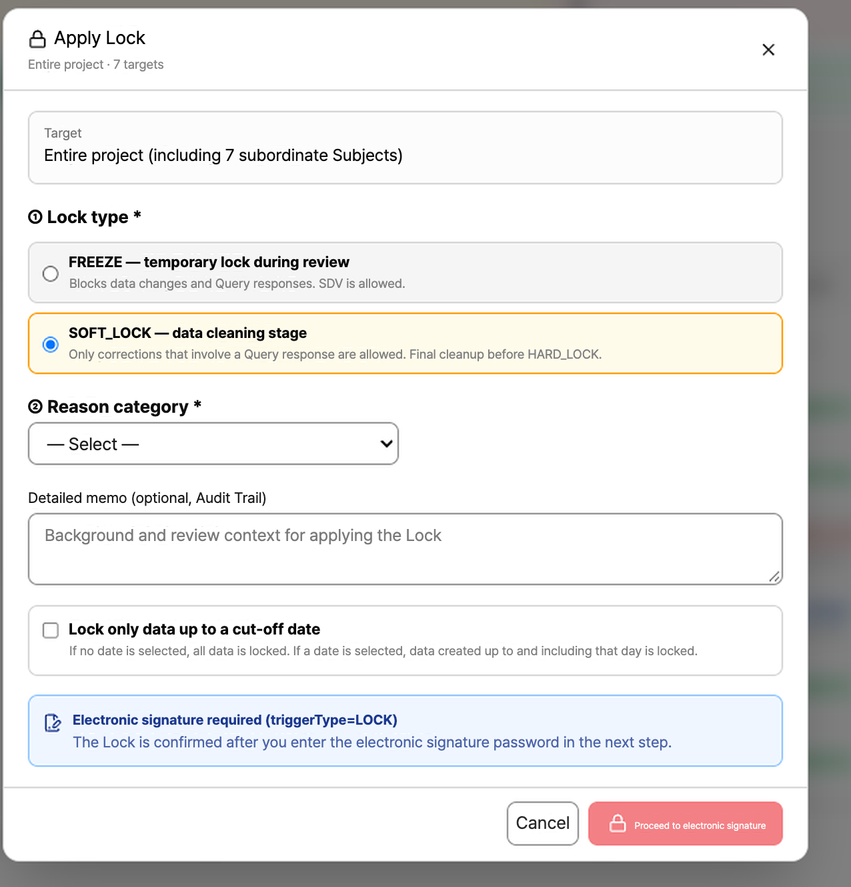
② Reason category — at first it shows “— Select —”. You must choose one.
Until you choose one, “Proceed to electronic signature” stays dimmed and cannot be clicked. The screenshot shows that state. It is enabled only after you also fill in Detailed memo (see Precautions in 2.2).
The target count is shown under the window title. The screenshot shows “Project-wide · 7 targets”.
Target — “Project-wide (including 7 lower-level Subjects)”. The number on this line is the number of subjects that will actually be locked.
Only two lock types — FREEZE · SOFT_LOCK. A function to apply a full lock (HARD_LOCK) to the whole project is not yet available.
Detailed memo — the guidance tells you what to write (“Background for applying the Lock · review context”).
The cut-off date setting can also be used for a Project Lock. If it is not checked, all data is locked.
Electronic signature notice — the next step is the same as for a subject lock 2.3.
Precautions
Must check Data corruption · Form cannot be completed
- • Locking the whole project blocks release at the subject level. After you lock it, “Release Lock” is disabled for every subject in the row menu, and to release even one subject you must first release the Project Lock. If only some subjects have finished cleaning, locking just those subjects with a batch lock 2.1, rather than the whole project, makes it easier to reverse later.
Release Lock
- 3.1Release window
3.1Release window
Overview
This is the window for releasing a lock. The details of the lock currently applied are shown first at the top, and below that you write why you are releasing it. As with applying, the release is confirmed only after you complete the electronic signature 2.3. The release reason list is different from the reason list for applying, and it is managed under code management in the project settings.
Screen guide
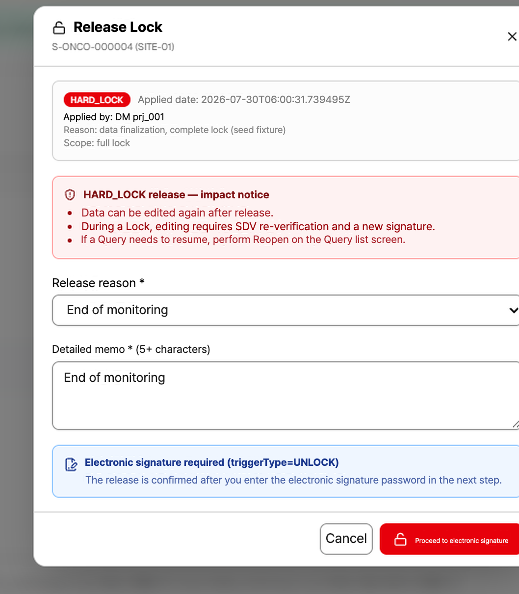
Release reason — you must choose one. The options include end of monitoring · additional correction needed · correction of a Lock application error · protocol change · audit response · Other, and so on.
Detailed memo — required, and at least 5 characters. The label says so.
“Proceed to electronic signature” — moves to the signature step 2.3.
Current lock type and applied date — the red badge at the far left of the line is the lock type currently applied (the screenshot shows HARD_LOCK), and to its right is the time it was applied. This time is not Korean time; it is Coordinated Universal Time (the Z at the end marks it). To read it as Korean time, add 9 hours (see Precautions in 4.1).
Applied by · reason · scope — shows who locked it and why, and whether it is a whole-dataset lock or a partial lock. The screenshot shows “Scope: whole-dataset lock”.
Impact notice — a red box that appears only when you release a full lock. It tells you that after release data editing becomes possible again, that if you edit, you must go through source data check (SDV) and electronic signature again, and that to reopen a Query you must Reopen it on the Query screen.
Electronic signature notice — “After entering the electronic signature password on the next step, the release is confirmed.”
Precautions
Must check Data corruption · Form cannot be completed
- • Releasing a full lock means reopening data that has been confirmed. The red notice on the screen spells out the cost: once released, the locked state is lifted, so source data check (SDV) and electronic signature must be obtained again, and all changes made in between are kept in the history. Before releasing, first check whether the release is really needed, and whether it can be handled with a Query instead. If you must release, write the follow-up action plan in the detailed memo.
Lock history
- 4.1History lookup
4.1History lookup
Overview
This screen gathers when, by whom and why locks and releases happened. It is append-only, so a line once accumulated cannot be edited or deleted, and if something needs correcting, a new line is added. For that reason the screen has no editing functions. The only way in is the “History” button on the Lock status view.
Screen guide
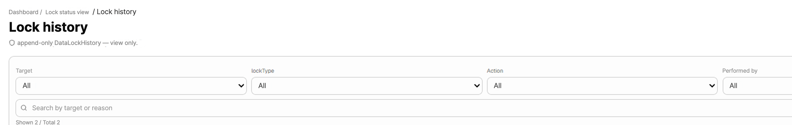
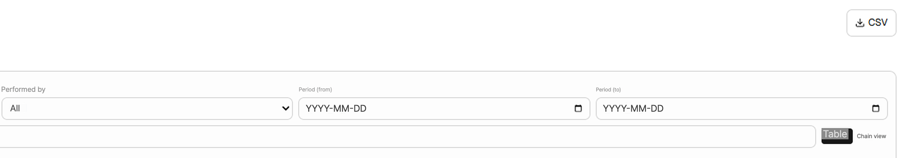
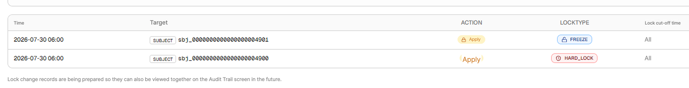
“CSV” — downloads the history that matches the current conditions as a file.
Search — finds entries by target and reason text.
“Table” / “Chain view” — choose whether to view as a table, or group by target and follow the order apply → release → re-apply. The screenshot shows the table view.
The subtitle states the nature of this screen — append-only · read-only.
Six filters — Target · Lock type · Action (apply/release) · Performed by · Period start · Period end. The line below shows Shown count / Total count.
The table has 8 columns — Time · Target · Action · Lock type · Lock cut-off time · Performed by · Reason · Signature. The last Signature column links to the electronic signature record used for that action.
Notice at the bottom — “Lock change records are being prepared so they can also be viewed together on the Audit Trail screen in the future.” However, they can already be viewed together under the “Lock” category on the Audit Trail screen. Only the notice text remains as it was before.
Time — the screenshot shows 2026-07-30 06:00 (see Precautions below).
Precautions
Must check Data corruption · Form cannot be completed
- • The time on this screen is not Korean time; it is Coordinated Universal Time as it is. The 06:00 in the screenshot is 15:00 the same day in Korean time, and the “applied date” in the release window 3.1 works the same way. By contrast, the Audit Trail screen shows “Date & time (KST)”, and the Lock widget on the project dashboard also converts to Korean time, so the same event looks 9 hours different on each screen. When you quote a time in audit response material, state which screen the value was read from, and if you need Korean time, add 9 hours.